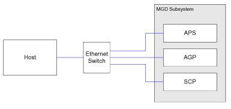

Proprietary to General Electric
Direction 5500113, Rev# 3
Discovery MR750 3.0T Service Methods
Module Version 1.0, Version Date 4/26/07
Proprietary to General Electric |
Diagnostics >> Peripherals >> Host Datapath Diagnostic
The purpose of this diagnostic is to verify the Ethernet communications links between the host computer and the processor boards within the MGD subsystem.
This diagnostic uses the host computer’s ping command, which is an operating system tool used for network testing, measurement, management. From the host computer, the diagnostic issues a ping command, which elicits a ECHO_RESPONSE from a target processor board. Statistics from the datagram, which includes round trip time, are used to compute the minimum, average and maximum response time.
The diagnostic interface provides default iteration and packet size parameters that were established to minimally “hammer” the Ethernet communications.
Host --cable-- Ethernet Switch --cable-- APS board
Host --cable-- Ethernet Switch --cable-- AGP board
Host --cable-- Ethernet Switch --cable-- SCP board
Illustration 1: Block Diagram

Select the board you want to ping.
Modify other test parameters as necessary.
Press the [Run] button.
Review the error log and corresponding extended error messages for subsequent actions. Additional responses to the diagnostic’s results are as follows:
| Fault | Problem Description | GE Field Action |
| 1. Tests to each of the processor boards fail. |
| |
| 2. Individual processor board failures. |
|
| NOTE: | If the Bridge board is missing or non-functional, or communications between the APS and AGP processor boards are inhibited, then the APS would assume the factory default host name of MCP820 and the AGP would assume the factory default host name of MCP820V. The diagnostic will adjust accordingly. |
None